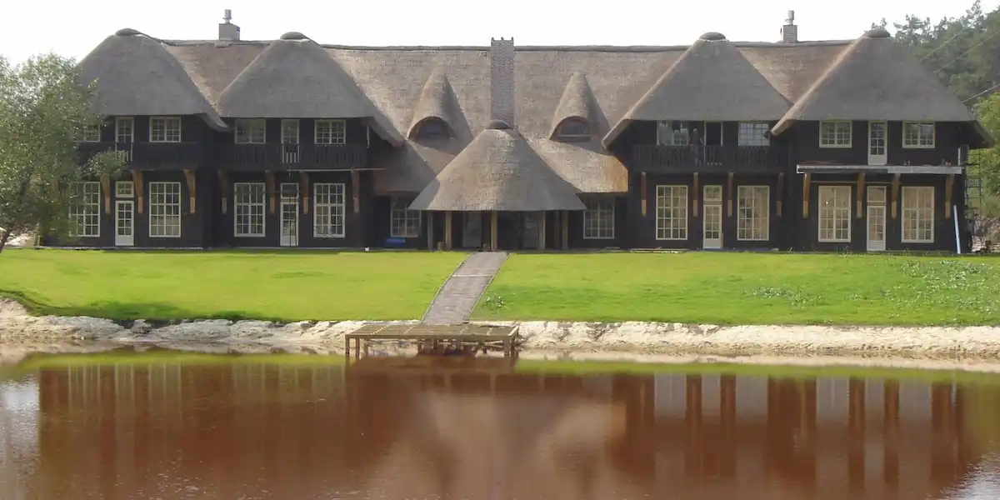

Розділ №1 Стаття
Природна покрівля
Очерет використовувався як покрівельне покриття для будівель різного виду та призначення протягом багатьох століть. Завдяки безперечним архітектурним перевагам, високим технічним характеристикам та сучасній системі укладання, популярність очеретяних та солом'яних дахів безперервно зростає. Існує лише одне конструктивне обмеження - кут нахилу покрівлі повинен становити не менше 30° за відсутності слухових вікон і не менше 45° - за наявності. У високогірних, сніжних районах кут може бути збільшений до 50°, що одночасно підвищує довговічність, та збільшує срок експлуатації майже в два рази.
Гнучкість стебел очерету дає безмежні можливості щодо дизайну та форм. Для влаштування очеретяної покрівлі використовується водяний очерет, що спеціально вирощується, стебла якого мають високу вологостійкість, міцність і довговічність. Вони сортуються за певними параметрами (розмірами, міцністю, стрункістю, гнучкістю).
Товщина покрівельного килима становить 30 см, що дозволяє уникнути додаткового утеплення покрівлі. Очерет може бути просочений спеціальними розчинами, за своєю пожежостійкістю не поступається традиційним покрівельним покриттям. Очеретяній покрівлі не страшні злива, град, ураган, сильні заморозки та різкі перепади температур. Під очеретяною покрівлею ви ніколи не почуєте гуркіт дощу, не відчуєте впливу накопичуваної статистичної електрики, як під металевою. Під натуральною покрівлею тепло взимку, прохолодно влітку, очерет впевнено виконує роль природного кондиціонера, будинок дихає і живе тихим життям. Очерет - природно стійкий до вологості, тож покрівля не промокає більше трьох сантиметрів своєї товщини.
У якісно покритому очеретяному даху немає щілин, тому гризуни не поселяються в щільно покладеному очереті, тим більше, що така рослинність їм не до смаку. Птахи також не є проблемою - очерет занадто важкий і міцно закріплений, щоб птахи могли витягнути окремі стебла.
Розділ №2 Додаткове завдання
Maecenas lacinia felis nec placerat sollicitudin. Quisque placerat dolor at scelerisque
imperdiet.
Phasellus tristique felis dolor.
Maecenas elementum in risus sed condimentum. Duis convallis ante ac tempus maximus. Fusce
malesuada sed
velit ut dictum. Morbi faucibus vitae orci at euismod. Integer auctor augue in
erat vehicula, quis
fermentum
ex finibus.
Mauris pretium elit a dui pulvinar, in ornare sapien euismod. Nullam interdum nisl ante, id feugiat
quam
euismod commodo. Sed ultrices lectus ut iaculis rhoncus. Aenean non dignissim justo, at
fermentum
turpis.
Sed molestie, ligula ut molestie ultrices, tellus ligula viverra neque, malesuada
consectetur diam
sapien
volutpat risus.
Quisque eget tortor lobortis, facilisis metus eu,
elementum est. Nunc sit amet erat quis ex convallis
suscipit. ur ridiculus mus.